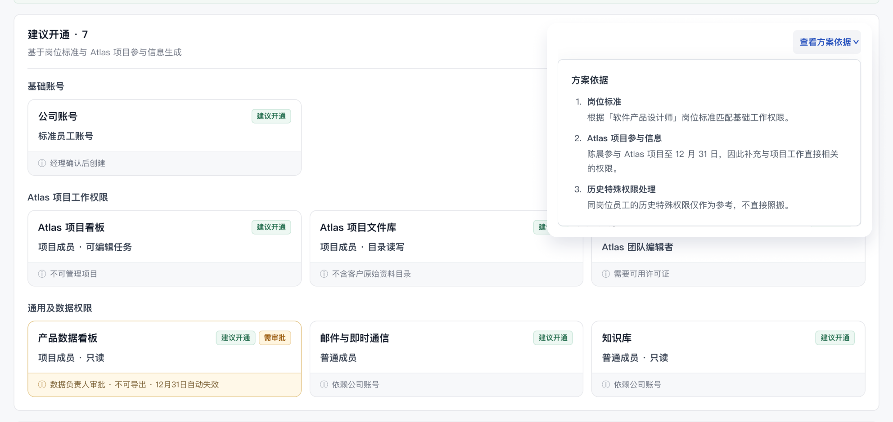
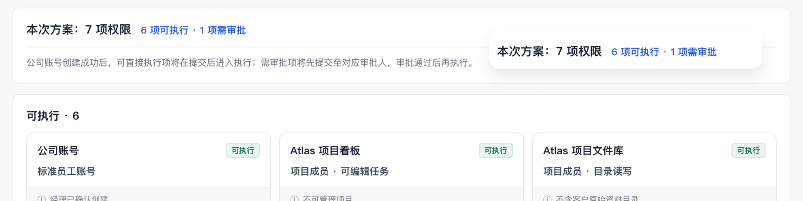
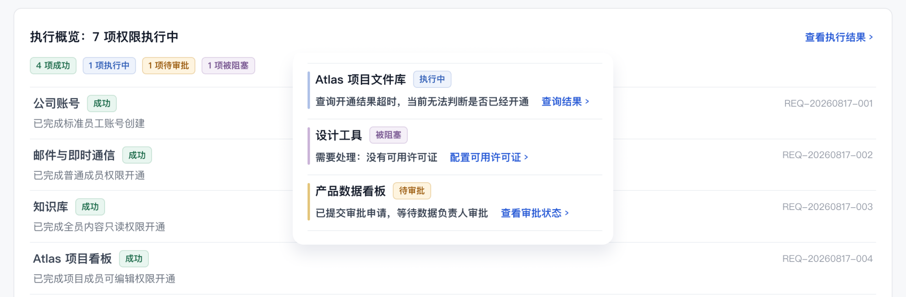

WHY
为什么相信 Agent 的判断？
不是告诉用户「答案是什么」，
而是让用户知道「答案从哪里来」。
判断有依据 → 建议可解释

AI WORKFLOW · 概念案例
从「给出建议」到「参与执行」
探索 Agent 如何参与企业任务执行
以及人、Agent 与系统之间的协作与控制关系
02 / CONTEXT & PROBLEM
围绕企业员工权限开通场景，设计一套从需求提出、方案生成，
到确认审批与跨系统执行的完整任务流程。
岗位规则 / 项目身份 / 权限依赖
审批条件
多系统执行
真正复杂的不是「申请」，
而是「判断与执行」。
当 AI 从「提供建议」进一步进入「任务执行」，
真正需要设计的，不只是 AI 能不能执行，
而是它应该执行到哪里。
03 / PROCESS
AI 扩大分析与推演范围，
我负责判断与收敛。
同一种协作原则
Agent 越深入任务执行，
越需要重新思考控制权的位置。
04 / WORKFLOW
提出目标
读取上下文核对规则
判断 / 调整
生成建议说明依据
确认执行
判断可执行识别审批
—
跨系统执行追踪状态
必要介入
解释原因给出下一步
方案判断
必要审批
异常介入
Agent 承接执行复杂度，
控制权在「自主执行」与「人工决策」之间动态交接。
05 / KEY MOMENTS
WHY
不是告诉用户「答案是什么」，
而是让用户知道「答案从哪里来」。
判断有依据 → 建议可解释


WHEN
Agent 可以判断「能不能做」，
但不替用户决定「要不要做」。
执行有边界 → 控制可交还
WHAT IF
异常不是执行的终点，
而是下一次「人机交接」的起点。
异常可解释 → 任务可恢复

06 / REFLECTION
01
不只设计用户如何操作系统，
还要设计用户与 Agent 如何共同完成任务。
02
面对审批、阻塞、超时与未知状态，
不仅要让任务可理解、可恢复，也要让人能够重新介入。
03
不只判断 Agent 能不能做，
还要定义它应该做到哪里、
什么时候必须交还控制权。
设计 Agent，
不只是设计它能做什么，
更重要的是设计什么时候由它做，
什么时候交还给人。